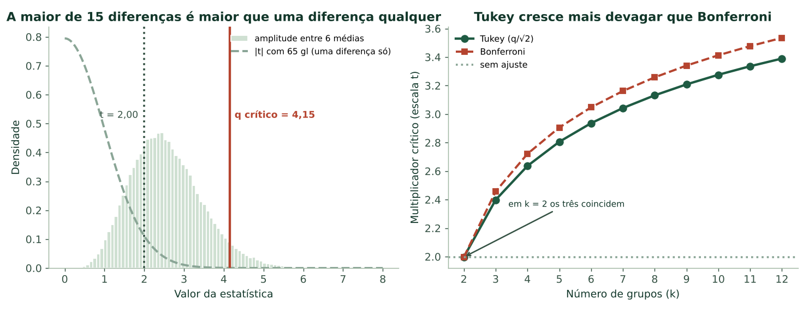
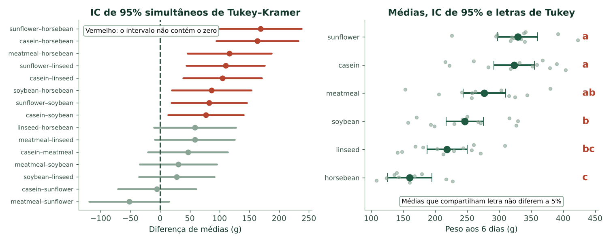

Tukey HSD / Tukey–Kramer
Compara todas as médias duas a duas mantendo a taxa de erro do conjunto em 5%, usando a distribuição da amplitude estudentizada.
Comece por aqui
Depois que a ANOVA indica que há diferença entre os grupos, a pergunta imediata é entre quais. O ajuste de Bonferroni resolve isso de forma genérica, sem olhar para a estrutura do problema. O procedimento de Tukey faz melhor: ele foi construído especificamente para o caso de todas as comparações duas a duas entre médias, e por isso aproveita o fato de que essas comparações são dependentes entre si.
Honestly Significant Difference, diferença honestamente significativa: o adjetivo contrapõe o método à "diferença mínima significativa" (LSD) de Fisher, que compara todos os pares pelo teste t comum e não controla a taxa de erro do conjunto. No exemplo desta ficha, a LSD produz ao menos um falso positivo em 35,75% dos experimentos; Tukey, em 4,93%.
O que é o procedimento
A ideia é simples e elegante. Entre \(k\) médias, aquela que mais se afasta das demais é a maior ou a menor; se a amplitude entre as duas extremas já não for significativa, nenhuma outra comparação pode ser. Tukey então constrói o teste a partir da distribuição da amplitude máxima entre \(k\) médias normais, padronizada pelo erro-padrão — a amplitude estudentizada \(q\) — e aplica o mesmo valor crítico a todas as comparações.

Bonferroni trata as quinze comparações como se fossem quinze perguntas independentes e divide o nível por quinze. Tukey sabe que elas não são independentes — cada média aparece em cinco delas, e todas compartilham o mesmo quadrado médio do resíduo — e calcula o valor crítico que essa estrutura exige, nem mais nem menos. Nos dados do exemplo, o multiplicador cai de 3,0476 para 2,9364, e os intervalos encolhem 3,6%.
Pressupostos e como verificá-los
| Pressuposto | Por que importa | Como verificar |
|---|---|---|
| Observações independentes | O mesmo da ANOVA. | Delineamento. |
| Resíduos aproximadamente normais | Sustenta a distribuição da amplitude estudentizada. | shapiro.test(residuals(modelo)); Q-Q. |
| Variâncias homogêneas | O procedimento usa um único quadrado médio do resíduo. | Levene e Brown-Forsythe; se falhar, use Games–Howell. |
| Grupos de tamanhos iguais (ideal) | Com n iguais o controle é exato; com n desiguais, a versão de Tukey–Kramer é levemente conservadora. | table(grupo); o R usa Tukey–Kramer automaticamente. |
| Comparações pareadas entre médias | É para isso que o método foi construído. | Para contrastes gerais, use Scheffé ou Bonferroni. |
| ANOVA significativa antes | Não é exigido: Tukey controla a taxa de erro por conta própria. | — |
Não. O procedimento controla a taxa de erro do conjunto independentemente, e exigir que a ANOVA rejeite primeiro torna o conjunto ainda mais conservador. A prática de "ANOVA e só então Tukey" é tradicional, mas não é um requisito do método. O que não se pode fazer é o contrário: rodar Tukey, encontrar uma diferença e reportá-la como se fosse uma comparação única e planejada.
Hipóteses e estatística de teste
Em que:
- \(k\)
- número de grupos (médias comparadas)
- \(\nu\)
- graus de liberdade do resíduo
- \(QM_{\text{res}}\)
- quadrado médio do resíduo da ANOVA
- \(n_i,\ n_j\)
- tamanhos dos dois grupos
- \(q_{\alpha;k,\nu}\)
- quantil da distribuição da amplitude estudentizada
Com grupos balanceados, a fórmula se simplifica: o erro-padrão vira \(\sqrt{QM_{\text{res}}/n}\) e a diferença mínima significativa é \(\text{DMS}=q_{\alpha;k,\nu}\sqrt{QM_{\text{res}}/n}\), a mesma para todos os pares.
Exemplo numérico, passo a passo
Com os dados das seis rações, \(QM_{\text{res}}=3\,008{,}554\), \(\nu=65\) e \(q_{0{,}05;\,6,\,65}=4{,}1527\).
As médias são 328,917 g (n = 12) e 160,200 g (n = 10), de modo que a diferença é 168,717 g.
O intervalo simultâneo é \[\begin{aligned}&168{,}72\pm4{,}1527\times16{,}606 \\ &= 168{,}72\pm68{,}97,\end{aligned}\] isto é, \([99{,}75;\ 237{,}68]\) g.
A diferença é 58,16 g, com \(q=3{,}592\) e \(p_{\text{aj}}=0{,}1277\). O intervalo, \([-9{,}07;\ 125{,}39]\), contém o zero.
Por Bonferroni o valor ajustado seria 0,2022 e por Holm, 0,0944. Nenhum atinge 0,05 — mas a ordenação entre os métodos é sempre a mesma: Tukey entre Holm e Bonferroni para comparações pareadas.
Verificações que a simulação confirma
- O percentil 95 simulado da amplitude estudentizada com 6 médias e 65 gl é 4,1474, contra o valor teórico de 4,1527.
- Com \(k=2\), \(q_{0{,}05;\,2,\,65}/\sqrt2=1{,}9971\), que é exatamente \(t_{0{,}975;\,65}\): sem multiplicidade, Tukey é o teste t.
- Em 10.000 experimentos com seis grupos de médias iguais, Tukey–Kramer produziu ao menos um falso positivo em 4,93% dos casos (alvo: 5%), contra 35,75% do teste t sem ajuste.
Propriedades
- Com grupos balanceados, o controle da taxa de erro do conjunto é exato.
- Com grupos desbalanceados (Tukey–Kramer), é levemente conservador — resultado conjecturado por Tukey e demonstrado por Hayter em 1984.
- É o procedimento mais poderoso entre os que protegem todas as comparações pareadas.
- Fornece intervalos de confiança simultâneos, não apenas valores-p.
- Não serve para contrastes gerais: para esses, use Scheffé ou Bonferroni.
- Perde validade quando as variâncias diferem muito; nesse caso, Games–Howell.
Como interpretar os resultados
| Elemento | O que informa | Cuidado |
|---|---|---|
| diff | Diferença entre as duas médias. | O sinal depende da ordem dos níveis. |
| lwr, upr | Intervalo simultâneo de 95%. | Conter o zero equivale a p ≥ 0,05. |
| p adj | Valor-p ajustado. | Já incorpora todas as comparações. |
| q | Estatística na escala da amplitude estudentizada. | Compare com q crítico. |
| Letras | Resumo visual. | Compartilhar letra significa ausência de evidência de diferença, não igualdade. |
| DMS | Diferença mínima significativa. | Só faz sentido com grupos balanceados. |
A apresentação em letras é cômoda, mas esconde informação: ela transforma intervalos de confiança em uma dicotomia. Duas médias que compartilham letra podem estar muito próximas ou apenas não ter sido distinguidas por falta de amostra. Apresente sempre as médias com seus intervalos ao lado das letras — é o que a figura do exemplo faz.
Como executar no R e em Python
Onde executar o código em Python
Não é preciso instalar nada: o Google Colab é um computador na nuvem, gratuito, que executa Python pelo navegador e já traz as bibliotecas usadas aqui (numpy, scipy e matplotlib).
TukeyHSD() está no pacote stats, já instalado com o R, e aplica-se diretamente a um objeto de aov(); com grupos de tamanhos diferentes ele usa automaticamente a versão de Tukey–Kramer. qtukey() e ptukey() dão os quantis e as probabilidades da amplitude estudentizada. multcomp::glht() com mcp(fator = "Tukey") e emmeans com adjust = "tukey" oferecem mais recursos, inclusive para modelos mais complexos. As letras saem de multcompView::multcompLetters4() ou de agricolae::HSD.test().
modelo <- aov(weight ~ feed, data = chickwts)
TukeyHSD(modelo)
plot(TukeyHSD(modelo), las = 1)
Exemplo de aplicação
Contexto dos dados
chickwts registra o peso, aos seis dias, de 71 pintinhos alimentados com seis rações diferentes. Os grupos têm tamanhos ligeiramente desiguais (de 10 a 14 aves), os resíduos passam no teste de normalidade (p = 0,627) e as variâncias são homogêneas (Brown–Forsythe p = 0,590). A ANOVA devolve F(5; 65) = 15,365 com p = 5,9 × 10⁻¹⁰: há diferença, e a pergunta passa a ser onde. Com seis rações são quinze comparações — e é esse número que cria o problema de multiplicidade. As fichas de Bonferroni, Šidák, Tukey e Games–Howell usam este mesmo conjunto, para que os resultados possam ser comparados diretamente.
Código em R
# Tukey HSD / Tukey-Kramer: exemplo completo ----
# Pacotes: stats (base), multcomp e emmeans (versões com mais recursos), multcompView (letras)
# install.packages(c("multcomp", "emmeans", "multcompView", "agricolae"))
# 1. Dados: chickwts, peso de pintinhos por tipo de ração
data(chickwts)
table(chickwts$feed) # n desiguais: 10 a 14
modelo <- aov(weight ~ feed, data = chickwts)
summary(modelo)
tapply(chickwts$weight, chickwts$feed, function(x) c(n = length(x), media = mean(x), dp = sd(x)))
# 2. Pressupostos (os mesmos da ANOVA)
par(mfrow = c(2, 2)); plot(modelo); par(mfrow = c(1, 1))
shapiro.test(residuals(modelo))
car::leveneTest(weight ~ feed, data = chickwts, center = median)
# 3. O procedimento
tk <- TukeyHSD(modelo, conf.level = 0.95)
tk
par(mar = c(5, 11, 4, 2)); plot(tk, las = 1, cex.axis = 0.7); par(mar = c(5, 4, 4, 2))
# 4. De onde vem o valor crítico: a distribuição da amplitude estudentizada
k <- nlevels(chickwts$feed); gl <- df.residual(modelo)
qtukey(0.95, k, gl) # q crítico
qtukey(0.95, k, gl) / sqrt(2) # o mesmo na escala do teste t
qt(0.975, gl) # para comparar: t sem ajuste
qtukey(0.95, 2, gl) / sqrt(2) # com k = 2, Tukey vira o teste t
# 5. Diferença mínima significativa, se os grupos fossem balanceados
QM <- sum(residuals(modelo)^2) / gl
n_medio <- mean(table(chickwts$feed))
qtukey(0.95, k, gl) * sqrt(QM / n_medio) # DMS aproximada
# 6. Versões com mais recursos
library(multcomp)
summary(glht(modelo, linfct = mcp(feed = "Tukey")))
confint(glht(modelo, linfct = mcp(feed = "Tukey")))
library(emmeans)
em <- emmeans(modelo, ~feed)
pairs(em, adjust = "tukey")
plot(em, comparisons = TRUE) # setas que se sobrepõem indicam ausência de diferença
# 7. Apresentação em letras
library(multcompView)
letras <- multcompLetters4(modelo, tk)
letras
# alternativa, com a tabela pronta:
library(agricolae)
HSD.test(modelo, "feed", console = TRUE)
# 8. Gráfico com médias, intervalos e letras
medias <- tapply(chickwts$weight, chickwts$feed, mean)
ns <- table(chickwts$feed)
eps <- sqrt(QM / ns)
ordem <- order(medias)
plot(medias[ordem], seq_along(medias), pch = 19, cex = 1.4, yaxt = "n", xlim = c(100, 450),
xlab = "Peso aos 6 dias (g)", ylab = "")
axis(2, at = seq_along(medias), labels = names(medias)[ordem], las = 1)
arrows(medias[ordem] - qt(0.975, gl) * eps[ordem], seq_along(medias),
medias[ordem] + qt(0.975, gl) * eps[ordem], seq_along(medias),
angle = 90, code = 3, length = 0.06)
A mesma análise em Python, com os resultados
Cole o código em um notebook do Google Colab ↗ e execute com Shift+Enter. Os valores abaixo são a saída desse código.
# Bibliotecas: numpy, scipy e matplotlib (já instaladas no Google Colab)
import numpy as np
from scipy import stats
import itertools
# Dados: chickwts (R). Peso (g) de 71 pintinhos aos 6 dias, segundo seis rações.
# O mesmo conjunto das fichas de Bonferroni e de Šidák, para comparação direta.
dados = {
"horsebean": [179,160,136,227,217,168,108,124,143,140],
"linseed": [309,229,181,141,260,203,148,169,213,257,244,271],
"soybean": [243,230,248,327,329,250,193,271,316,267,199,171,158,248],
"sunflower": [423,340,392,339,341,226,320,295,334,322,297,318],
"meatmeal": [325,257,303,315,380,153,263,242,206,344,258],
"casein": [368,390,379,260,404,318,352,359,216,222,283,332]}
nomes = list(dados)
gs = [np.array(v, float) for v in dados.values()]
k = len(gs); ns = np.array([len(g) for g in gs], float); N = int(ns.sum())
medias = np.array([g.mean() for g in gs])
QM = np.sum((ns - 1) * np.array([g.var(ddof=1) for g in gs])) / (N - k)
gl = N - k
alfa = 0.05
print("ração n média DP EP da média")
for i, nm in enumerate(nomes):
print(f"{nm:<12}{int(ns[i]):2d} {medias[i]:7.3f} {gs[i].std(ddof=1):6.2f} {np.sqrt(QM/ns[i]):.3f}")
print(f"\nANOVA: F({k-1}; {gl}) = {stats.f_oneway(*gs)[0]:.4f}, p = {stats.f_oneway(*gs)[1]:.4e}")
print(f"QM do resíduo = {QM:.3f} | DP residual = {np.sqrt(QM):.4f} g | n desiguais: {ns.astype(int)}")
# 1. A distribuição da amplitude estudentizada
print("\nDe onde vem o valor crítico: a AMPLITUDE entre k médias, não uma diferença qualquer")
print(f"q crítico (5%, k = {k}, gl = {gl}) = {stats.studentized_range.ppf(1-alfa, k, gl):.4f}")
print(" k médias q crítico (5%) equivalente na escala t (q/raiz(2))")
for kk in (2, 3, 4, 5, 6, 8, 10):
q = stats.studentized_range.ppf(1-alfa, kk, gl)
print(f" {kk:3d} {q:9.4f} {q/np.sqrt(2):17.4f}")
print(f"Com k = 2 o valor na escala t é {stats.studentized_range.ppf(1-alfa,2,gl)/np.sqrt(2):.4f},")
print(f"exatamente o t bilateral de 5% com {gl} gl ({stats.t.ppf(1-alfa/2, gl):.4f}): sem múltiplas")
print("comparações, Tukey se reduz ao teste t comum.")
print("\nSimulação: distribuição da amplitude estudentizada com 6 médias e 65 gl")
rng = np.random.default_rng(5)
M = 200000
Z = rng.standard_normal((M, 6))
S = np.sqrt(rng.chisquare(gl, M) / gl)
amp = (Z.max(axis=1) - Z.min(axis=1)) / S
print(f" percentil 95 simulado = {np.percentile(amp, 95):.4f} | teórico = "
f"{stats.studentized_range.ppf(0.95, 6, gl):.4f}")
# 2. Tukey-Kramer: as 15 comparações
print(f"\nTukey-Kramer ({k*(k-1)//2} comparações; os n desiguais entram no erro-padrão)")
q95 = stats.studentized_range.ppf(1-alfa, k, gl)
linhas = []
for a, b in itertools.combinations(range(k), 2):
dif = medias[b] - medias[a]
ep = np.sqrt(QM/2 * (1/ns[a] + 1/ns[b])) # erro-padrão na escala de q
q = abs(dif) / ep
pa = stats.studentized_range.sf(q, k, gl)
marg = q95 * ep
linhas.append((f"{nomes[b]} - {nomes[a]}", dif, q, pa, dif - marg, dif + marg))
print(f"{'comparação':<26}{'dif.':>9}{'q':>8}{'p ajust.':>11}{'IC 95% simultâneo':>26}")
for nm, dif, q, pa, lo, hi in sorted(linhas, key=lambda x: x[3]):
print(f"{nm:<26}{dif:9.2f}{q:8.3f}{pa:11.5f}{'*' if pa<alfa else ' '}"
f" [{lo:8.2f}; {hi:8.2f}]")
# 3. Comparação com os demais ajustes
m = k*(k-1)//2
print("\nMultiplicadores críticos na escala t e largura do IC de sunflower - horsebean")
i = [l[0] for l in linhas].index("sunflower - horsebean")
ep_t = np.sqrt(QM*(1/ns[0] + 1/ns[3]))
dif = linhas[i][1]
for nome, cr in [("LSD (sem ajuste)", stats.t.ppf(1-alfa/2, gl)),
("Tukey-Kramer", q95/np.sqrt(2)),
("Šidák", stats.t.ppf(1 - (1-(1-alfa)**(1/m))/2, gl)),
("Bonferroni", stats.t.ppf(1-alfa/(2*m), gl)),
("Scheffé", np.sqrt((k-1)*stats.f.ppf(1-alfa, k-1, gl)))]:
print(f" {nome:<18}{cr:7.4f} IC = [{dif-cr*ep_t:7.2f}; {dif+cr*ep_t:7.2f}] "
f"(largura {2*cr*ep_t:6.2f} g)")
print("Tukey é o mais curto dos ajustes para comparações pareadas; Scheffé, o mais longo,")
print("porque protege QUALQUER contraste, inclusive os decididos depois de ver os dados.")
# 4. Apresentação em letras
print("\nApresentação em letras (médias que compartilham letra não diferem a 5%)")
ordem = np.argsort(-medias)
sig = np.ones((k, k), bool)
for a, b in itertools.combinations(range(k), 2):
dif = medias[b] - medias[a]
pa = stats.studentized_range.sf(abs(dif)/np.sqrt(QM/2*(1/ns[a]+1/ns[b])), k, gl)
sig[a, b] = sig[b, a] = (pa >= alfa) # True = NÃO diferem
# Grupos maximais de médias que NÃO diferem entre si (cliques do grafo de não significância)
cliques = []
for r in range(k, 0, -1):
for comb in itertools.combinations(ordem, r):
if all(sig[x, y] for x, y in itertools.combinations(comb, 2)):
cj = set(comb)
if not any(cj <= c for c in cliques):
cliques.append(cj)
letras = [""] * k
for idx, c in enumerate(cliques):
for j in c:
letras[j] += chr(ord("a") + idx)
letras = ["".join(sorted(x)) for x in letras]
print("ração média letras")
for i in ordem:
print(f"{nomes[i]:<12}{medias[i]:9.2f} {letras[i]}")
print("Leitura: sunflower e casein (a) não diferem entre si; horsebean (c) é a única")
print("ração que difere de todas as demais.")
# 5. O erro de pular a ANOVA? Não: Tukey não precisa dela
print("\nTukey controla a taxa de erro do conjunto por conta própria:")
print("não é obrigatório que a ANOVA rejeite antes. O procedimento em dois passos")
print("(ANOVA e só depois Tukey) é ainda mais conservador que Tukey sozinho.")
print(f"Nestes dados a ANOVA rejeita com folga (p = {stats.f_oneway(*gs)[1]:.3e}), então a questão não se coloca.")
# 6. Simulação da taxa de erro do conjunto
print("\nSimulação: 10.000 experimentos com 6 grupos de médias IGUAIS (n = 12 cada)")
rng = np.random.default_rng(31)
M2 = 10000
glr = 6 * 11
q_crit = stats.studentized_range.ppf(1 - alfa, 6, glr) # calculado UMA vez, fora do laço
t_crit = stats.t.ppf(1 - alfa/2, glr)
G = rng.normal(0, 1, (M2, 6, 12))
mm = G.mean(axis=2) # médias: M2 x 6
qmr = G.var(axis=2, ddof=1).mean(axis=1) # QM do resíduo de cada experimento
ep = np.sqrt(qmr / 12)
difs = np.abs(mm[:, :, None] - mm[:, None, :]) # todas as diferenças
iu = np.triu_indices(6, 1)
t_obs = difs[:, iu[0], iu[1]] / (ep[:, None] * np.sqrt(2))
rej_lsd = int(np.sum((t_obs > t_crit).any(axis=1)))
rej_tuk = int(np.sum((mm.max(axis=1) - mm.min(axis=1)) / ep > q_crit))
print(f" LSD (t sem ajuste): {100*rej_lsd/M2:.2f}% de experimentos com ao menos um falso positivo")
print(f" Tukey-Kramer: {100*rej_tuk/M2:.2f}% (o alvo é 5%)")
Resultados da execução
ração n média DP EP da média
horsebean 10 160.200 38.63 17.345
linseed 12 218.750 52.24 15.834
soybean 14 246.429 54.13 14.659
sunflower 12 328.917 48.84 15.834
meatmeal 11 276.909 64.90 16.538
casein 12 323.583 64.43 15.834
ANOVA: F(5; 65) = 15.3648, p = 5.9364e-10
QM do resíduo = 3008.554 | DP residual = 54.8503 g | n desiguais: [10 12 14 12 11 12]
De onde vem o valor crítico: a AMPLITUDE entre k médias, não uma diferença qualquer
q crítico (5%, k = 6, gl = 65) = 4.1527
k médias q crítico (5%) equivalente na escala t (q/raiz(2))
2 2.8244 1.9971
3 3.3921 2.3985
4 3.7289 2.6368
5 3.9680 2.8058
6 4.1527 2.9364
8 4.4290 3.1318
10 4.6329 3.2759
Com k = 2 o valor na escala t é 1.9971,
exatamente o t bilateral de 5% com 65 gl (1.9971): sem múltiplas
comparações, Tukey se reduz ao teste t comum.
Simulação: distribuição da amplitude estudentizada com 6 médias e 65 gl
percentil 95 simulado = 4.1474 | teórico = 4.1527
Tukey-Kramer (15 comparações; os n desiguais entram no erro-padrão)
comparação dif. q p ajust. IC 95% simultâneo
sunflower - horsebean 168.72 10.160 0.00000* [ 99.75; 237.68]
casein - horsebean 163.38 9.838 0.00000* [ 94.42; 232.35]
sunflower - linseed 110.17 6.958 0.00009* [ 44.41; 175.92]
meatmeal - horsebean 116.71 6.887 0.00011* [ 46.34; 187.08]
casein - linseed 104.83 6.621 0.00021* [ 39.08; 170.59]
sunflower - soybean 82.49 5.406 0.00388* [ 19.13; 145.85]
soybean - horsebean 86.23 5.370 0.00422* [ 19.54; 152.92]
casein - soybean 77.15 5.057 0.00837* [ 13.79; 140.52]
meatmeal - linseed 58.16 3.592 0.12770 [ -9.07; 125.39]
linseed - horsebean 58.55 3.526 0.14133 [ -10.41; 127.51]
meatmeal - sunflower -52.01 3.212 0.22070 [ -119.24; 15.22]
casein - meatmeal 46.67 2.883 0.33246 [ -20.56; 113.91]
meatmeal - soybean 30.48 1.951 0.73914 [ -34.41; 95.38]
soybean - linseed 27.68 1.814 0.79329 [ -35.68; 91.04]
casein - sunflower -5.33 0.337 0.99989 [ -71.09; 60.42]
Multiplicadores críticos na escala t e largura do IC de sunflower - horsebean
LSD (sem ajuste) 1.9971 IC = [ 121.81; 215.62] (largura 93.81 g)
Tukey-Kramer 2.9364 IC = [ 99.75; 237.68] (largura 137.93 g)
Šidák 3.0393 IC = [ 97.34; 240.10] (largura 142.76 g)
Bonferroni 3.0476 IC = [ 97.14; 240.29] (largura 143.15 g)
Scheffé 3.4322 IC = [ 88.11; 249.32] (largura 161.21 g)
Tukey é o mais curto dos ajustes para comparações pareadas; Scheffé, o mais longo,
porque protege QUALQUER contraste, inclusive os decididos depois de ver os dados.
Apresentação em letras (médias que compartilham letra não diferem a 5%)
ração média letras
sunflower 328.92 a
casein 323.58 a
meatmeal 276.91 ab
soybean 246.43 b
linseed 218.75 bc
horsebean 160.20 c
Leitura: sunflower e casein (a) não diferem entre si; horsebean (c) é a única
ração que difere de todas as demais.
Tukey controla a taxa de erro do conjunto por conta própria:
não é obrigatório que a ANOVA rejeite antes. O procedimento em dois passos
(ANOVA e só depois Tukey) é ainda mais conservador que Tukey sozinho.
Nestes dados a ANOVA rejeita com folga (p = 5.936e-10), então a questão não se coloca.
Simulação: 10.000 experimentos com 6 grupos de médias IGUAIS (n = 12 cada)
LSD (t sem ajuste): 35.75% de experimentos com ao menos um falso positivo
Tukey-Kramer: 4.93% (o alvo é 5%)
| Comparação | Diferença (g) | q | p ajustado | IC 95% simultâneo |
|---|---|---|---|---|
| sunflower − horsebean | +168,72 | 10,160 | < 0,00001 | [+99,75; +237,68] |
| casein − horsebean | +163,38 | 9,838 | < 0,00001 | [+94,42; +232,35] |
| meatmeal − horsebean | +116,71 | 6,887 | 0,00011 | [+46,34; +187,08] |
| sunflower − linseed | +110,17 | 6,958 | 0,00009 | [+44,41; +175,92] |
| casein − linseed | +104,83 | 6,621 | 0,00021 | [+39,08; +170,59] |
| soybean − horsebean | +86,23 | 5,370 | 0,00422 | [+19,54; +152,92] |
| sunflower − soybean | +82,49 | 5,406 | 0,00388 | [+19,13; +145,85] |
| casein − soybean | +77,15 | 5,057 | 0,00837 | [+13,79; +140,52] |
| Comparação | Diferença (g) | q | p ajustado |
|---|---|---|---|
| linseed − horsebean | +58,55 | 3,526 | 0,14133 |
| meatmeal − linseed | +58,16 | 3,592 | 0,12770 |
| meatmeal − sunflower | −52,01 | 3,212 | 0,22070 |
| casein − meatmeal | +46,67 | 2,883 | 0,33246 |
| meatmeal − soybean | +30,48 | 1,951 | 0,73914 |
| soybean − linseed | +27,68 | 1,814 | 0,79329 |
| casein − sunflower | −5,33 | 0,337 | 0,99989 |
| Ração | Média (g) | Letras |
|---|---|---|
| sunflower | 328,92 | a |
| casein | 323,58 | a |
| meatmeal | 276,91 | ab |
| soybean | 246,43 | b |
| linseed | 218,75 | bc |
| horsebean | 160,20 | c |
Leitura: as rações de girassol e de caseína produziram os maiores pesos e não se distinguem entre si (5,33 g de diferença, p = 0,9999). O feijão-de-cavalo produziu o menor peso e difere de todas as demais, com a única exceção da linhaça. A farinha de carne ocupa uma posição intermediária que não se separa nem do grupo superior nem do inferior — é o que a letra dupla "ab" indica.
Para uma recomendação prática, a leitura é: girassol e caseína são equivalentes e superiores; se o critério de desempate for o custo, escolha o mais barato dos dois. O feijão-de-cavalo deve ser descartado.
Tukey contra os demais ajustes
| Procedimento | Multiplicador (escala t) | IC 95% | Largura |
|---|---|---|---|
| LSD (sem ajuste) | 1,9971 | [+121,81; +215,62] | 93,81 g |
| Tukey–Kramer | 2,9364 | [+99,75; +237,68] | 137,93 g |
| Šidák | 3,0393 | [+97,34; +240,10] | 142,76 g |
| Bonferroni | 3,0476 | [+97,14; +240,29] | 143,15 g |
| Scheffé | 3,4322 | [+88,11; +249,32] | 161,21 g |
Tukey é o mais curto dos quatro ajustes, como esperado: ele é o único construído exatamente para o conjunto de comparações que está sendo feito. Scheffé é o mais longo porque protege qualquer contraste imaginável, inclusive os formulados depois de ver os dados — uma proteção muito mais ampla e, portanto, muito mais cara. A LSD, que não protege nada, é a referência de quanto custa o controle da taxa de erro: 44 g de largura adicional, ou 47%.
Erros comuns
| Erro | Como evitar |
|---|---|
| Usar com variâncias muito desiguais | O procedimento depende de um quadrado médio comum; use Games–Howell. |
| Aplicar a contrastes que não são comparações pareadas | Para contrastes gerais, Scheffé ou Bonferroni. |
| Interpretar letras iguais como igualdade comprovada | É ausência de evidência de diferença. |
| Reportar apenas as letras | Apresente também médias e intervalos. |
| Rodar Tukey e depois destacar uma comparação como se fosse planejada | O ajuste já contou todas elas. |
| Calcular a DMS única com grupos desbalanceados | Com n desiguais cada par tem o seu erro-padrão. |
| Usar depois de uma ANOVA de Welch | Welch não usa variância agrupada; Tukey, sim. |
| Achar que a ANOVA precisa ser significativa antes | Tukey controla a taxa de erro por conta própria. |
Alternativas e fluxo de trabalho
| Procedimento | Quando preferir |
|---|---|
| Dunnett | Todos os tratamentos contra um controle; mais poderoso que Tukey nesse caso. |
| Games–Howell | Variâncias heterogêneas. |
| Bonferroni ou Holm | Famílias que não são comparações pareadas, ou que misturam testes. |
| Scheffé | Contrastes decididos depois de ver os dados. |
| Newman–Keuls, Duncan, REGW | Procedimentos sequenciais; mais poderosos, com controle da taxa de erro menos rigoroso (Newman–Keuls e Duncan) ou igualmente rigoroso (REGW). |
| Hochberg GT2 e Gabriel | Grupos muito desbalanceados. |
| Dunn (postos) | Depois de um Kruskal–Wallis. |
| Contrastes planejados | Quando as perguntas foram definidas antes do experimento; mais poderosos que qualquer comparação a posteriori. |
- Ajuste a ANOVA e verifique os seus pressupostos.
- Confira a homogeneidade de variâncias: é o que decide entre Tukey e Games–Howell.
- Aplique
TukeyHSD()e examine os intervalos, não só os valores-p. - Apresente as médias com intervalos; use letras como complemento, não como substituto.
- Se a pergunta era "cada tratamento contra o controle", refaça com Dunnett.
Referências desta ficha
- TUKEY, John W. Comparing individual means in the analysis of variance. Biometrics, v. 5, n. 2, p. 99-114, 1949.
- TUKEY, John W. The problem of multiple comparisons. Princeton: Princeton University, 1953. Manuscrito reproduzido em: The collected works of John W. Tukey, v. 8. New York: Chapman and Hall, 1994.
- KRAMER, Clyde Y. Extension of multiple range tests to group means with unequal numbers of replications. Biometrics, v. 12, n. 3, p. 307-310, 1956.
- HAYTER, Anthony J. A proof of the conjecture that the Tukey-Kramer multiple comparisons procedure is conservative. The Annals of Statistics, v. 12, n. 1, p. 61-75, 1984.
- DUNNETT, Charles W. A multiple comparison procedure for comparing several treatments with a control. Journal of the American Statistical Association, v. 50, n. 272, p. 1096-1121, 1955.
- HOCHBERG, Yosef; TAMHANE, Ajit C. Multiple comparison procedures. New York: Wiley, 1987.
- BRETZ, Frank; HOTHORN, Torsten; WESTFALL, Peter. Multiple comparisons using R. Boca Raton: Chapman and Hall/CRC, 2010.
- MILLER JR., Rupert G. Simultaneous statistical inference. 2. ed. New York: Springer, 1981.
- MONTGOMERY, Douglas C. Design and analysis of experiments. 10. ed. Hoboken: Wiley, 2019.
- ANÓNIMO. Biometrika table. Biometrika, v. 35, p. 214, 1948; ver McNEIL, Donald R. Interactive data analysis. New York: Wiley, 1977. (Fonte dos dados
chickwts.) - R CORE TEAM. R: a language and environment for statistical computing. Vienna: R Foundation for Statistical Computing, 2026. Disponível em: https://www.r-project.org/. (Funções
TukeyHSD,qtukeyeptukey, pacotestats.) - HOTHORN, Torsten; BRETZ, Frank; WESTFALL, Peter. Simultaneous inference in general parametric models. Biometrical Journal, v. 50, n. 3, p. 346-363, 2008. (Pacote
multcomp.) - DE MENDIBURU, Felipe. agricolae: statistical procedures for agricultural research. R package. Disponível em: https://CRAN.R-project.org/package=agricolae. (Função
HSD.test.) - POSIT TEAM. RStudio: integrated development environment for R. Boston: Posit Software, PBC. Disponível em: https://posit.co/download/rstudio-desktop/.
- VIRTANEN, Pauli et al. SciPy 1.0: fundamental algorithms for scientific computing in Python. Nature Methods, v. 17, p. 261-272, 2020. DOI: 10.1038/s41592-019-0686-2. (Funções do módulo
scipy.stats.) - HARRIS, Charles R. et al. Array programming with NumPy. Nature, v. 585, p. 357-362, 2020. DOI: 10.1038/s41586-020-2649-2.
- HUNTER, John D. Matplotlib: a 2D graphics environment. Computing in Science & Engineering, v. 9, n. 3, p. 90-95, 2007.
- GOOGLE. Google Colaboratory. Disponível em: https://colab.research.google.com/.
- As figuras desta ficha foram elaboradas pelo autor.

Prof. Dr. Cássius Henrique Xavier Oliveira
Professor · ICTIN/UFLA · Estatística, Confiabilidade e Ciência de Dados.
Conheça minha trajetória e projetos →